Para revisar · sin enlace desde el sitio
Dirección visual
7 de octubre de 2026 · cuadros a 1920×1080 · Onyx #020202 y Candy Blue #B2D5E5, 80/20
Rehechos con los colores definitivos: las dovelas son ónix pulido (negro casi puro, especular nítido, rugosidad distinta en cada piedra, vetas apenas más claras); Candy Blue es la luz: la clave y el borde tintados, el hilo de la voz, el texto principal, el botón sólido. El oro se fue. Cuatro maneras de dibujar la voz de la clase, para elegir con la imagen.
Puntajes (0 a 10; pasa con promedio ≥ 8 y ningún criterio < 7)
| Cuadro | Materiales | Luz | Vacío | Acabado | Tipografía | Concepto | Sin juego | Marca | Promedio | ¿Pasa? |
|---|---|---|---|---|---|---|---|---|---|---|
| Portada · A luz volumétrica | 7 | 7.5 | 8 | 7.5 | 8 | 7.5 | 8 | 8 | 7.69 | no |
| Portada · B hilos de luz | 7 | 7 | 8 | 7.5 | 8 | 8 | 7.5 | 8 | 7.62 | no |
| Portada · D metal anodizado | 7.5 | 7.5 | 8 | 7.5 | 8 | 7.5 | 8 | 8 | 7.75 | no |
| Portada · C tinta en agua negra | 7 | 7 | 7.5 | 8 | 8 | 8.5 | 8 | 8 | 7.75 | no |
| La clave (ónix con la marca de luz) | 7.5 | 7.5 | 9 | 8 | 8 | 8 | 8 | 8.5 | 8.06 | sí |
| La pantalla | 7 | 7 | 8 | 8 | 8 | 8.5 | 8 | 7.5 | 7.75 | no |
Pasa la clave. Las portadas quedan entre 7,6 y 7,75: lo que más falta es la luz sobre el ónix (un brillo del canto de arriba todavía se quema) y el material de la clave en la variante anodizada, que sale más plateado que celeste. Se ajusta en cuanto el dueño elija la variante; no tiene sentido pulir las cuatro.
La v3: lo que cambió
El remate entra por el ojo de la C: en «Descargar» el aro enmarca la caja como un portal y en el pie la cámara ya pasó adentro, con la clase y el minuto grabados en grande. El tema claro dejó de verse gris: el fondo sale igual al de la página y la tinta y los hilos oscurecen en vez de sumar luz (tinta de verdad sobre agua clara). En el teléfono la C va chica y arriba en las secciones del medio, sin tapar títulos. Las imágenes quietas se rehicieron con la portada actual.
| Sección | Materiales | Luz | Vacío | Acabado | Tipografía | Concepto | Sin juego | Marca | Promedio | ¿Pasa? |
|---|---|---|---|---|---|---|---|---|---|---|
| Descargar · el portal | 8 | 8 | 8 | 8 | 8 | 9 | 8 | 8.5 | 8.19 | sí |
| Pie · adentro del ojo | 8 | 8 | 8 | 8 | 8 | 8.5 | 8 | 8.5 | 8.12 | sí |
| Portada · tema claro | 8 | 8 | 8.5 | 8 | 8 | 8.5 | 8.5 | 8.5 | 8.25 | sí |
| Teléfono · tema claro | 8 | 7.5 | 8 | 8 | 8 | 8 | 8.5 | 8 | 8.00 | sí |
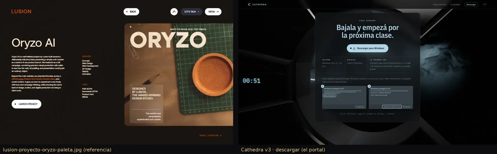
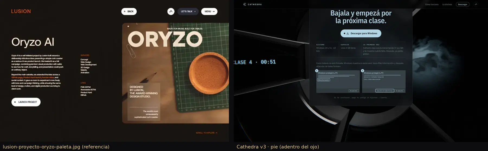
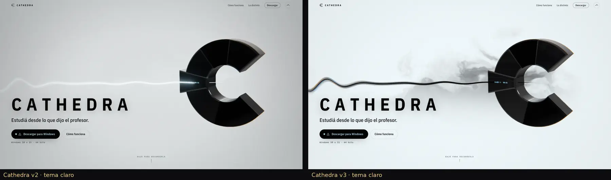
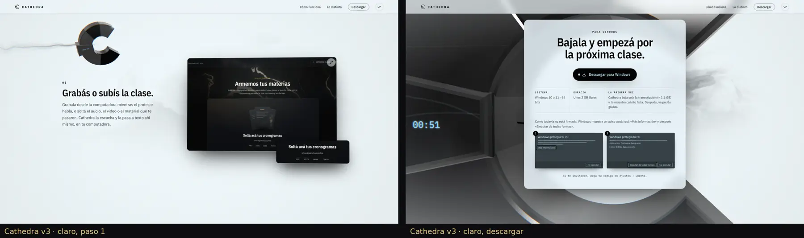
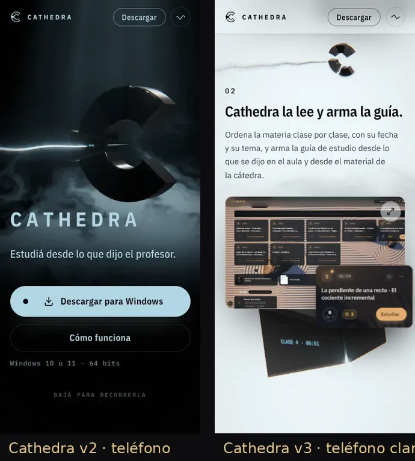
La v2 entera, sección por sección (7/10)
Construida sobre la escena elegida: la tinta en agua negra (profundidad), la luz volumétrica Candy sin quemarse y la voz como hilos de luz con volumen que llegan dispersos y entran ordenados en la C en los primeros tres segundos. La clave ahora es una cuña tallada con chaflanes y la clase y el minuto grabados en luz.
| Sección | Materiales | Luz | Vacío | Acabado | Tipografía | Concepto | Sin juego | Marca | Promedio | ¿Pasa? |
|---|---|---|---|---|---|---|---|---|---|---|
| Portada | 8 | 8 | 8.5 | 8 | 8 | 8.5 | 8.5 | 9 | 8.31 | sí |
| Paso 1 · grabar | 7.5 | 8 | 8.5 | 8 | 8 | 8 | 8 | 8.5 | 8.06 | sí |
| Paso 2 · la clave tallada | 8 | 7.5 | 8.5 | 8 | 8 | 8.5 | 8 | 8.5 | 8.12 | sí |
| Paso 3 · preguntar | 7.5 | 8 | 8.5 | 8 | 8 | 8.5 | 8 | 8 | 8.06 | sí |
| Paso 4 · simulacro | 8 | 7.5 | 8 | 8 | 8 | 8.5 | 8 | 8.5 | 8.06 | sí |
| Lo distinto · la clave | 8 | 8 | 9 | 8 | 8.5 | 8.5 | 8 | 8.5 | 8.31 | sí |
| Las cuatro razones | 8 | 7.5 | 8.5 | 8 | 8.5 | 8 | 8 | 8 | 8.06 | sí |
| Descargar | 7.5 | 8 | 8 | 8 | 8 | 8.5 | 8 | 8 | 8.00 | sí |
Las ocho secciones pasan. La portada animada, comparada con el fotograma C quieto, no pierde profundidad (abajo).
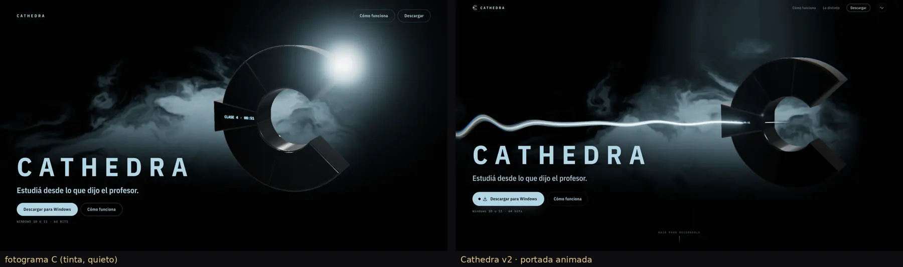


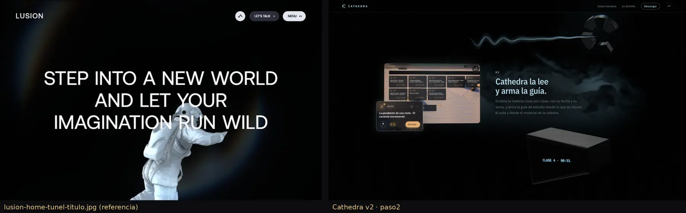
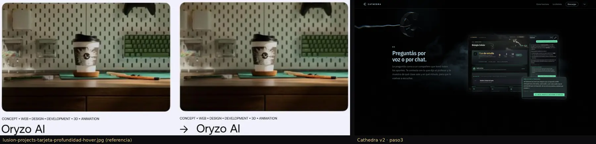
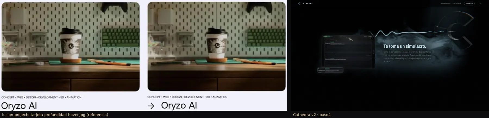


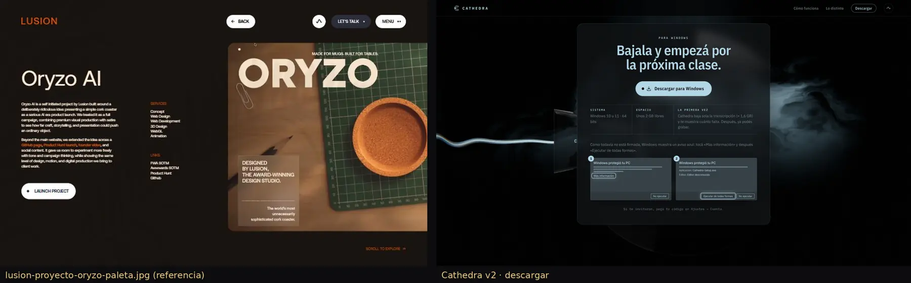


Las variantes que se compararon
A · Luz volumétrica
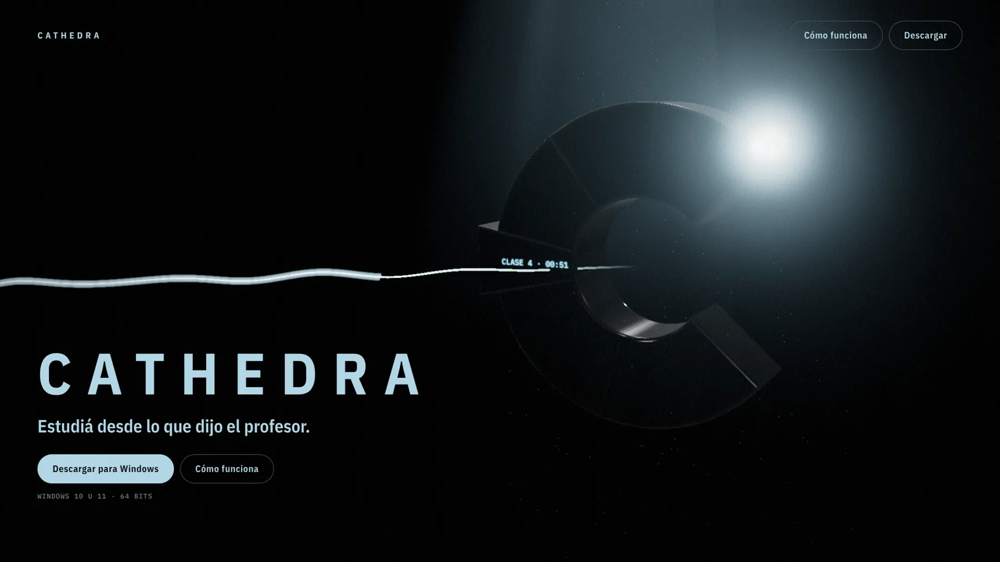
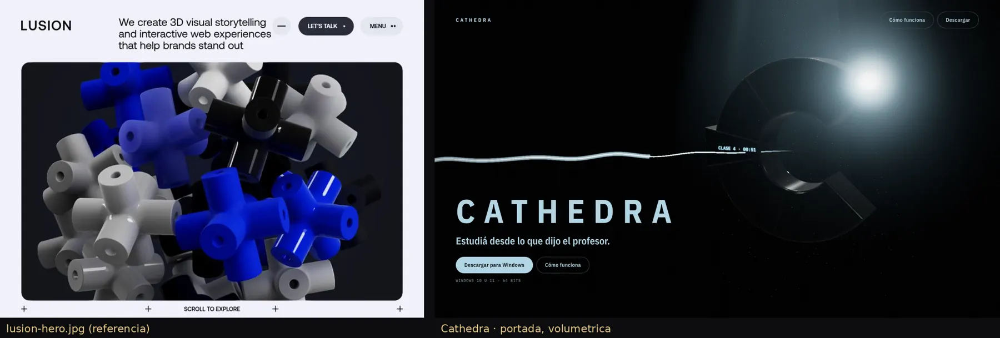
B · Hilos de luz


C · Tinta en agua negra


D · Metal anodizado

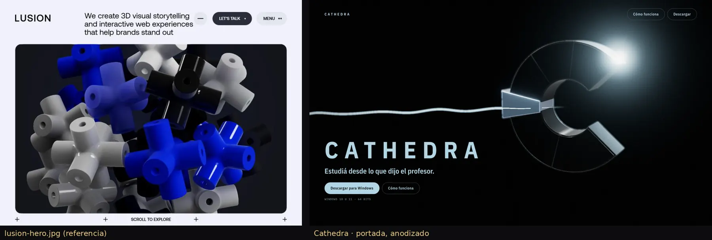
La clave


La pantalla